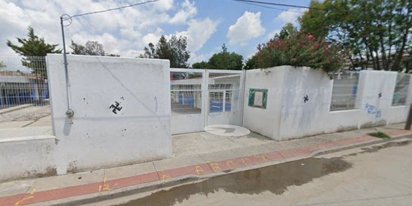
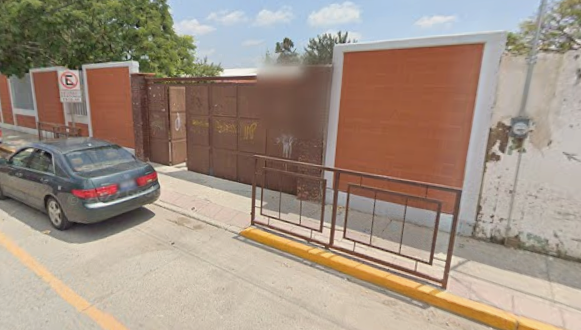
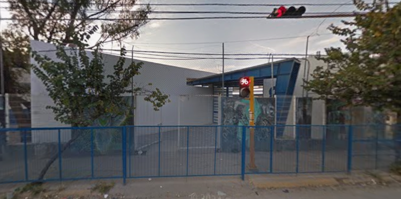
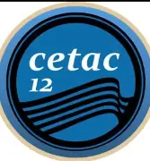
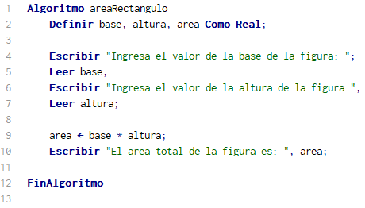
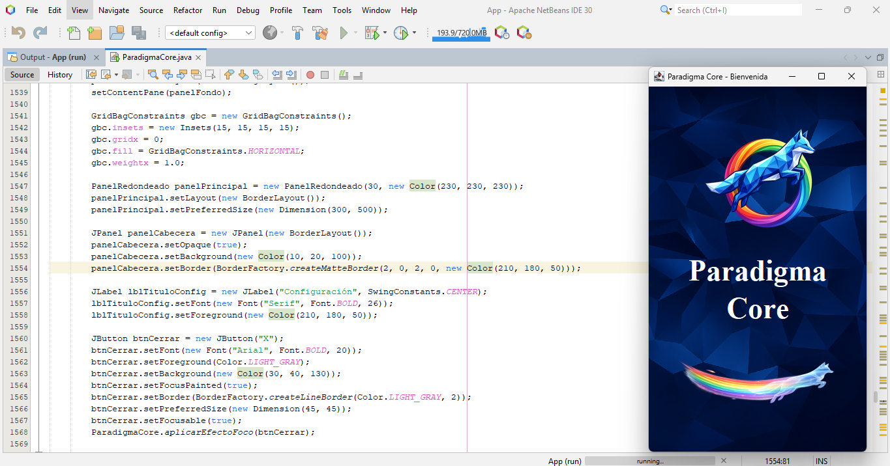

-
Kinder (preescolar) 2011 - 2013
Jardín de Niño Diego Rivera
Una etapa de la que no puedo hablar mucho por lo rápida y sencilla que fue. Aquí aprendí y trabaje las bases de lo que me ayudaría a entender lo que estaría por venir.
-
Primaria 2013 - 2019
Escuela Primaria Wigberto Jiménez Moreno
Una etapa de mi vida de la cual no recuerdo tanto como desearía. Sin embargo, aquí tuve la oportunidad de que gracias a mi promedio alto poder ser participe en un Torneo de Matemáticas a nivel municipal.
-
Secundaria 2019 - 2022
Telesecundaria No. 744
Esta estapa aunque fue pasajera debido a la pandemia, es también una de las que mejor recuerdo pues fuí miembro de Mediación Escolar y Républica Escolar.
-
Preparatoria 2022 - 2025
Cetac 12
Esta etapa fue de las más emocionantes en mi vida puesto que tuve la fortuna de ser participe en diferentes cosas, como ejemplo la siguiente imgen y videos:Escolta
Batalla de robots
Trabajar abilix

-
Universidad 2025 - Actualidad
Universidad Tecnológica de León
Mi etapa y estancia actual, he trabajado y reforzado bastante mis conocimientos anteriores al igual que aprendido muchos más. Esta págna y cientos de programas más son el claro ejemplo de lo que he logradoBase de Datos

POO
